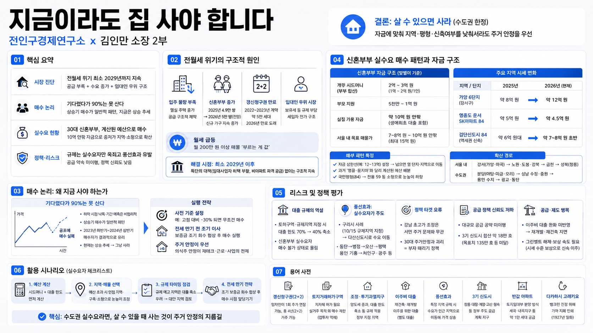

전인구경제연구소MORNING DIGEST · 2026-07-13 · 전인구경제연구소🎬 영상
지금이라도 집 사야 합니다 (전인구경제연구소 x 김인만 소장 2부)
title: 지금이라도 집 사야 합니다 (전인구경제연구소 x 김인만 소장 2부)

01핵심 개요
항목
내용
채널
전인구경제연구소 (게스트: 김인만 소장)
소재
2026년 현재 서울·수도권 전월세 위기와 30대 신혼부부의 내집마련 실수요 급증
핵심주장
전월세 문제는 최소 2029년까지 해결 불가 — 특단의 대책(다주택자 임대사업자 혜택 부활, 비아파트 파격 공급) 없이는 구조적으로 지속. 30대 실수요자는 투기가 아니라 등 떠밀려 매수 중
결론
무주택자·갈아타기 희망자는 "살 수 있으면 사라"(수도권 한정, 지방은 시기상조). 자금에 맞춰 지역·평형·신축여부를 낮춰서라도 주거 안정을 우선하라는 조언
02시장 진단: 전월세 위기의 구조적 원인
입주 물량 부족과 멸실 주택 증가가 동시 진행 — 공급 자체가 구조적으로 막힘
신혼부부 결혼 건수: 2025년 4.9만 쌍 → 2026년 5만 쌍 전망, 신규 가구 형성이 전월세 수요를 지속 압박
2022~2023년 저렴한 전세로 계약한 약 5만 세대가 2026년 계약갱신청구권(2+2) 만료 도래 — "온실 속 화초"였던 이들이 급등한 전월세 시장에 노출
현재 시장은 "절대적 임대인(집주인) 우위 시장"으로 규정 — 보유세 인상 등 정부 규제 부담이 집주인에서 세입자로 전가되는 구조
월세도 급등 — 예시로 월 200만 원 이상 매물이 "부르는 게 값"인 상황
정부의 다주택자 규제 기조 유지 시 임대사업자 혜택 부활 등 "특단의 대책" 나오기 어려움 → 대통령 발언 번복 필요성 언급, 정책 전환 가능성 낮게 평가
03매수 논리: 왜 지금 사야 하는가
하락장 진입 타이밍을 노리는 전략은 통계적으로 실패 확률 높음 — 화자 주장: "기다렸다가 떨어지면 90%는 못 산다"(공포 심리로 매수 실행 불가)
자산 가격은 상승기에 매수가 이뤄지는 것이 일반적 패턴 — 하락 시점·낙폭·하락 지속기간의 불확실성에 배팅하는 것은 비합리적이라는 논리
2022년 미국 긴축발 하락장 사례: 바닥 확인 후 반등이 시작된 2023년 하반기~2024년 상반기 매수자가 결과적으로 유리했다고 평가(사후적 판단)
무릎에서 사자는 원칙 대안: 고점 대비 -30%하락 시 무조건 매수 등 사전 기준 설정을 권장
현재는 상승 추세이므로 "그냥 사야 한다"는 것이 화자의 결론 — 의식주(주거) 안정이 재테크·근로·사업의 전제조건이라는 논리
전세 만기 도래 전 조기 이사(예: 만기 전 보증금 조기 회수 협상) 후 매수 실행이 유리하다는 실행 팁 제시 — 만기 시점엔 매매·전세·월세 모두 추가 상승해 있을 것이라는 전제
04신혼부부 실수요 매수 패턴과 자금 구조
항목
수치(화자 발언 기준)
신혼부부 평균 시드머니
개인당 1억~2억 원(맞벌이 기준) + 부모 지원 약 5천만~1억 원
실질 가용 매수 자금
대출(생애최초 포함) 활용 시 약 10억 원 안팎
서울 내 목표 매물가
7~8억 원부터 10억 원 안팎, 최대 15억 원
가양 6단지(강서구) 시세 변화
2025년 여름 약 8억 원 → 2026년 현재 약 12억 원
영종도 운서 SK아파트 전용 84
2025년 약 5억 원 → 2026년 현재 약 4억 5천만 원
검단신도시 전용 84 신축 역세권
약 7억 원대~8억 원 초반
매수 패턴: "자금 상한선(예: 12~13억)을 정하고 넘으면 옆 단지·옆 지역으로 이동" — 과거 영끌·묻지마 투자와 달리 계산된 예산 배분이 특징이라고 진단
확산 경로(서울 내): 강서구 가양·마곡 → 노원·도봉·강북구, 금천구 → 성북구(정릉) 등 중저가 지역으로 순차 확산
국민평형 기준 하향: 기존 전용 84(국평) → 전용 59로 눈높이 하향 조정하는 경향
수도권 확산 경로: 분당(야탑·미금·오리역) → 성남 수정·중원구 → 용인 수지 → 광교·동탄으로 순차 확산, 규제지역 지정에도 가격 하락은 없었다고 평가(실수요 매수이므로 양도세 중과·거래 규제의 체감 영향이 낮다는 논리)
05리스크 및 정책 평가
대출 규제의 역설: 토지거래허가구역·규제지역 지정 시 대출 한도가 70%→40%로 축소되며 신혼부부 실수요자가 오히려 매수 불가 상태에 몰림
규제의 풍선효과: 구리시(2025년 10월 15일 규제지역 지정, 나흘 뒤 토지거래허가구역 지정) 사례 — 지정 전 갭투자 수요 집중 이후, 규제 이후 신혼부부 수요가 비규제지역인 다산신도시(8호선, 잠실까지 약 25분)로 이동
화자 평가: "과거엔 투기 수요가 풍선효과를 주도했다면, 지금은 30대 실수요자가 풍선효과를 주도" — 규제로 실수요자 억제는 정책 타겟팅 오류라는 비판
확산 사례 다수 거론: 동탄→병점→오산→평택(지제역·고덕 신축 위주), 용인 기흥 규제 후 처인구·광주시로 확산, 안산·부천·인천 등도 언급
강남 등 초고가 아파트 가격 조정(예: 압구정 130억→110억 하락 사례 언급)은 서민 주거 문제와 무관하다는 비판 — 정책 타겟이 "부자 때리기"에 치우쳐 30대 주거안정과 괴리
공급 정책 신뢰도 저하: 역대 정부의 대규모 공급 공약(윤석열 정부 270만호, 문재인 정부 200만호 등)이 실현되지 않아 국민 신뢰가 낮다고 평가. 3기 신도시(고양 창릉·부천 대장·인천 계양·하남 교산·남양주 왕숙) 합산 물량은 약 18만 호로 목표치(135만 호 등)에 크게 못 미친다고 지적
재개발·재건축 관련 실무 이슈: 서울시가 요구 중인 이주비 대출 완화가 미반영 상태 — 관리처분 이후 세입자 퇴거·멸실 진행이 막히는 병목으로 지적
그린벨트 해제 관련: 서리풀지구(1·2지구 합산 약 2만 세대) 등 입지 우수 부지 활용 필요성 제기, 원주민 보상은 감정가가 아닌 시세 수준의 신속 보상이 필요하다는 의견(민간 개발 사례로 시세 2배 보상 시 신속 이주 성사 사례 언급)
06활용 시나리오
신혼부부·무주택 실수요자의 예산 설정: 시드머니(부부 합산 2억~3억 원 + 부모 지원)와 생애최초 대출 한도를 먼저 계산한 뒤, 서울 내 매물이 예산을 초과하면 순차적으로 인접 저가 지역·구축·소형 평형으로 눈높이를 낮추는 의사결정 순서를 세워볼 수 있음
규제지역 지정 전후 타이밍 점검: 토지거래허가구역·규제지역 지정 예고가 있는 지역은 대출 한도(예: 70%→40%)가 축소될 수 있으므로, 비규제지역 인접 신도시(예: 다산·검단·영종 등 교통망 확보 지역)를 대안으로 사전 검토
전세 계약 만기 전 협상 전략 참고: 만기 이전 임대인과 조기 보증금 반환을 협의해 자금을 확보하고, 매매 시점을 앞당기는 전략의 장단점을 스스로 검토(단, 이는 특정 화자의 개인 견해이며 시장 상황에 따라 결과가 달라질 수 있음에 유의)
07용어 사전
용어
설명
갱신청구권(2+2)
임차인이 1회에 한해 계약을 2년 추가 연장할 수 있는 권리, 총 4년(2+2) 거주 가능
토지거래허가구역
지정 지역 내 부동산 거래 시 관할 지자체 허가 필요, 실거주 목적 외 매수 제한(갭투자 억제 목적)
조정대상지역/투기과열지구
양도세 중과, 대출 한도 축소 등 규제가 적용되는 정부 지정 지역
이주비 대출
재건축·재개발 관리처분 이후 기존 거주자가 이주하기 위해 받는 대출(신규 주택 구입 대출과 별개)
풍선효과
특정 지역 규제 시 수요가 인근 비규제 지역으로 옮겨가며 그곳 가격이 오르는 현상
3기 신도시
고양 창릉, 부천 대장, 인천 계양, 하남 교산, 남양주 왕숙 등 정부 주도 공급 계획 지구
반값 아파트
이명박 정부 시절 시행된 토지임대부 분양 방식, 세곡·내곡지구 등에 약 1만 세대 공급
다카하시 고레키요 사례
1927년 일본 쇼와 금융공황 당시 은행 파산 소문에 예금 인출 사태(뱅크런)가 발생하자, 가짜 지폐를 인쇄해 은행 창구에 쌓아 심리적 불안을 진정시켰다는 일화(재무대신 다카하시 고레키요)